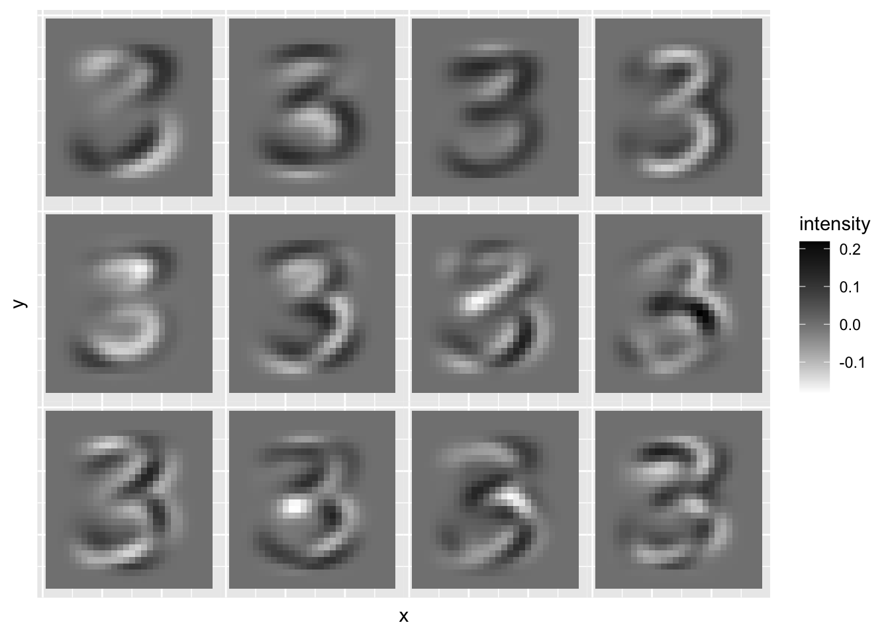
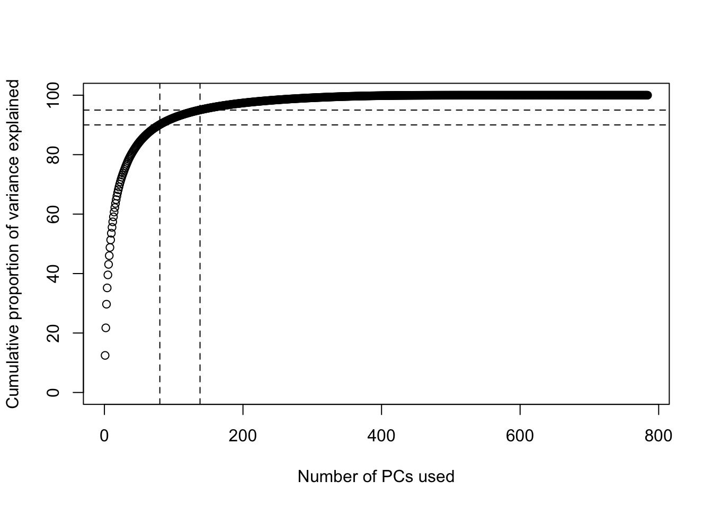
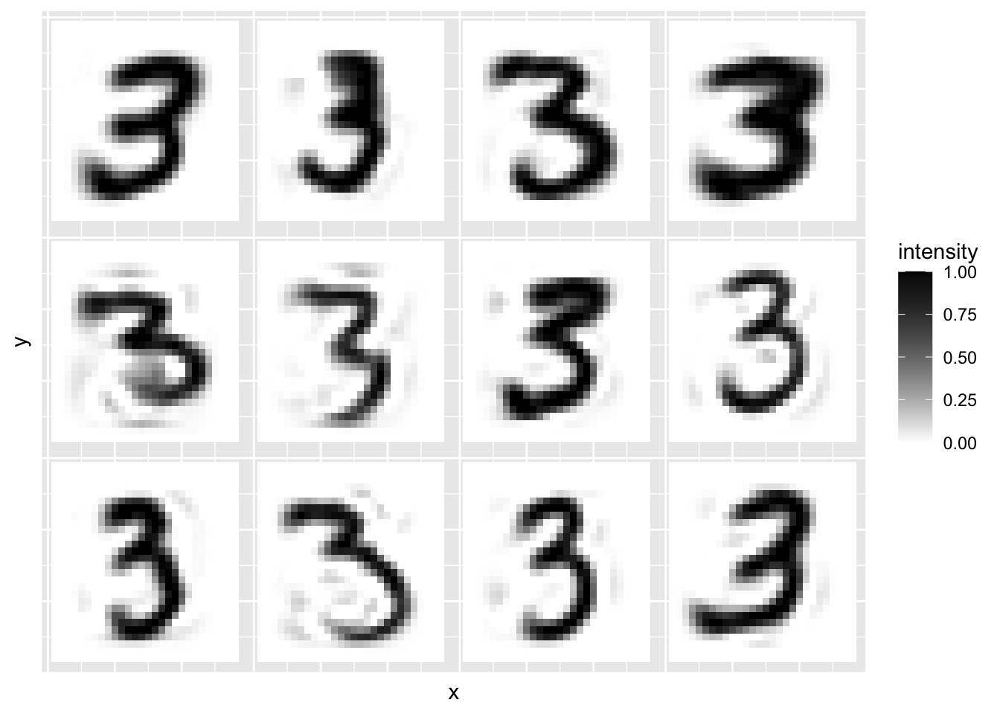
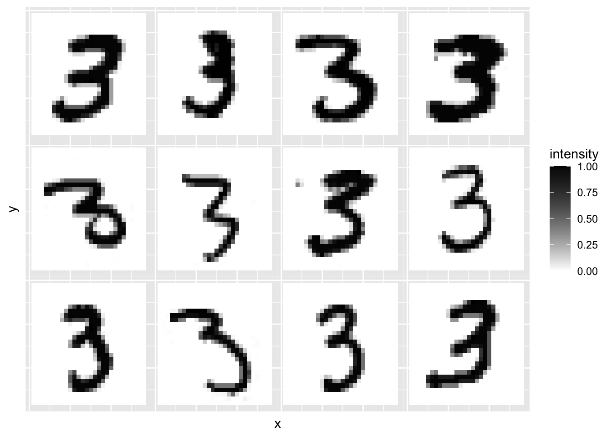
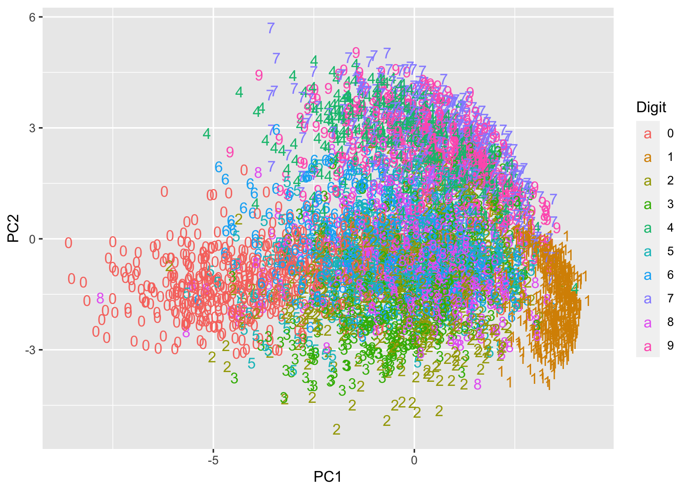

2.3 An alternative view of PCA
In this section, we will again consider the situation in which the sample \(\mathbf x_1, \ldots , \mathbf x_n \in \mathbb{R}^p\) have zero mean (replace \(\mathbf x_i\) by \(\mathbf x_i-\bar{\mathbf x}\) if the mean is not zero).
To recap, in PCA to find the \(r\) leading principal components, we solve the optimization problem \[\begin{align*} \mbox{For } k=1, \ldots, r &\mbox{ maximize } \mathbf u_k^\top \mathbf S\mathbf u_k \\ &\mbox{ subject to } \mathbf u_k^\top \mathbf u_j = \begin{cases} 1 &\mbox{ if } j=k\\ 0 & \mbox{ otherwise.} \end{cases} \end{align*}\]
We can write this in the form given in the introduction to this chapter (Equation (2.1)) as \[\begin{align*} &\mbox{Maximize } \operatorname{tr}(\mathbf U^\top \mathbf S\mathbf U) \\ &\mbox{ subject to } \mathbf U^\top \mathbf U=\mathbf I_r, \end{align*}\] as \(\operatorname{tr}(\mathbf U^\top \mathbf S\mathbf U) = \sum_{k=1}^r \mathbf u_k^\top \mathbf S\mathbf u_k\) if \(\mathbf U\) has columns \(\mathbf u_1, \ldots, \mathbf u_r\).
An equivalent problem
There is another optimization problem that we sometimes wish to solve, that turns out to be equivalent to the above, thus providing another reason why PCA is so widely used.
Suppose we want to find the best rank-\(r\) linear approximation to the data matrix \(\mathbf X=\begin{pmatrix}\mathbf x_1& \ldots & \mathbf x_n\end{pmatrix}^\top\) (remember that we’re assuming the data have been column centered, if not, replace \(\mathbf X\) by \(\mathbf H\mathbf X\)). One way to think about this is seek a \(p\times r\) matrix \(\mathbf U\) for which the rank \(r\) linear model \[f(\mathbf y) = \mathbf U\mathbf y\] can be used to represent the data.
Let’s choose \(\mathbf y_i\in \mathbb{R}^r\) and \(\mathbf U\) to minimize the sum of squared errors \[\sum_{i=1}^n ||\mathbf x_i - \mathbf U\mathbf y_i||^2_2.\]
If we write \[\mathbf Y^\top = \begin{pmatrix} | &&|\\ \mathbf y_1& \ldots & \mathbf y_n\\ | &&| \end{pmatrix}\] then \[\begin{align*} \sum_{i=1}^n ||\mathbf x_i - \mathbf U\mathbf y_i||^2_2 &=\operatorname{tr}((\mathbf X^\top - \mathbf U\mathbf Y^\top)^\top (\mathbf X^\top - \mathbf U\mathbf Y^\top))\\ &=||\mathbf X^\top - \mathbf U\mathbf Y^\top||_F^2 \end{align*}\]
i.e., we’re looking for the rank-\(r\) matrix \(\mathbf X_r\) that minimizes \(||\mathbf X- \mathbf X_r||_F=||\mathbf X^\top - \mathbf X_r^\top||_F\), noting that we can write an arbitrary rank-\(r\) matrix as \(\mathbf X_r^\top = \mathbf U\mathbf Y^\top\) for some \(p\times r\) matrix \(\mathbf U\) and a \(n \times r\) matrix \(\mathbf Y\).
It makes sense to restrict the columns of \(\mathbf U\) to be orthonormal so that \(\mathbf U^\top \mathbf U=\mathbf I_r\) as non-orthonormal coordinates systems are confusing. We know that the \(\mathbf u\in \mathcal{C}(\mathbf U)\) (where \(\mathcal{C}(\mathbf U)\) is the column space of \(\mathbf U\)) that minimizes \[||\mathbf x-\mathbf u||_2\] is the orthogonal projection of \(\mathbf x\) onto \(\mathcal{C}(\mathbf U)\), which given the columns of \(\mathbf U\) are orthonormal is \(\mathbf u= \mathbf U\mathbf U^\top \mathbf x\) (see Section ??). So we must have \(\mathbf X_r^\top = \mathbf U\mathbf U^\top \mathbf X^\top\) and \(\mathbf Y^\top = \mathbf U^\top \mathbf X^\top\).
So it remains to find the optimal choice for \(\mathbf U\) by minimizing \[\begin{align*} ||\mathbf X^\top - \mathbf U\mathbf U^\top \mathbf X^\top||_F^2 &=||\mathbf X- \mathbf X\mathbf U\mathbf U^\top ||_F^2\\ &= \operatorname{tr}((\mathbf X- \mathbf X\mathbf U\mathbf U^\top)^\top(\mathbf X- \mathbf X\mathbf U\mathbf U^\top))\\ &= \operatorname{tr}(\mathbf X^\top \mathbf X) - 2 \operatorname{tr}(\mathbf U\mathbf U^\top \mathbf X^\top\mathbf X) + \operatorname{tr}(\mathbf U\mathbf U^\top \mathbf X^\top\mathbf X\mathbf U\mathbf U^\top)\\ &= \operatorname{tr}(\mathbf X^\top \mathbf X) - \operatorname{tr}(\mathbf U^\top \mathbf X^\top \mathbf X\mathbf U) \end{align*}\] where we’ve used the fact \(\operatorname{tr}(\mathbf A\mathbf B) = \operatorname{tr}(\mathbf B\mathbf A)\) and that \(\mathbf U^\top \mathbf U=\mathbf I_r\).
Minimizing the equation above with respect to \(\mathbf U\) is equivalent to maximizing \[\operatorname{tr}(\mathbf U^\top \mathbf S\mathbf U) \] which is the maximum variance objective we used to introduce PCA.
So to summarize, the optimization problem \[\begin{align*} &\mbox{Minimize } ||\mathbf X^\top -\mathbf U\mathbf U^\top \mathbf X^\top||_F \\ &\mbox{ subject to } \mathbf U^\top \mathbf U=\mathbf I_r, \end{align*}\] is equivalent to (and has the same as) the PCA optimization problem.
2.3.1 Example: MNIST handwritten digits
Let’s consider the MNIST dataset of handwritten digits discussed in Chapter ??. Recall this is a collection of 60,000 digits, each of which has been converted to a \(28\times 28\) pixel greyscale image (so \(p=784\)).
I’ve made a clean version of the dataset available on Moodle, so you can try this analysis for yourself. Let’s look at just the 3s. I’ve created a plotting function plot.mnist, which is in the code file on Moodle.
load(file="mnist.rda")
source('mnisttools.R')
mnist3 = mnist$train$x[mnist$train$y==3,] # select just the 3s
plot.mnist(mnist3[1:12,]) # plot the first 12 images
We can see there is quite a bit of variation between them. Now lets look at \(\bar{\mathbf x}\), the average 3.

We can use the prcomp command to find the principal components. Note that we can’t use the scale=TRUE option as some of the columns are all 0, and so R throws an error as it cannot rescale these to have variance 1. Let’s plot the first few principal components/eigenvectors/loading vectors.

These show the main mode of variability in the 3s. Focusing on the first PC, we can see that this is a form of rotation and causes the 3 to slant either forward or backward. If we wanted a rank-2 approximation to the data we would use \[f(\mathbf y) = \bar{\mathbf x} + y_1 \mathbf v_1 + y_2 \mathbf v_2\]
Let’s try reconstructing the data with \(r=2\).
r=2
recon = mnist3.pca$x[,1:r] %*% t(mnist3.pca$rotation[,1:r])
plot.mnist2(matrix(rep(xbar,12), byrow=T, nr=12)+recon[1:12,])
We can see that all of these 3s still look a lot like the average 3, but that they vary in their slant, and the heaviness of the line.
The scree plot shows a sharp decrease in the eigenvalues until about the 100th component, at which point they level off.

It can also be useful to plot the cumulative sum of the total proportion of variance explained by a given number of principal components. I’ve drawn on horizontal lines at 90% and 95% of variance explained, to help identify when we cross these thresholds. We need 80 components to explain 90% of the variance, and 138 components to explain 95% of the variance.
cumvar = 100*cumsum(mnist3.pca$sdev^2) / sum(mnist3.pca$sdev^2)
plot(cumvar, ylab="Cumulative proportion of variance explained", xlab="Number of PCs used", ylim=c(0,100))
abline(h=90, lty=2)
abline(v=min(which(cumvar>90)), lty=2)
abline(h=95, lty=2)
abline(v=min(which(cumvar>95)), lty=2)
Let’s now look at the reconstruction using \(r=10, \;50, \;100\) and \(500\) components to see how the accuracy changes.
r=10
recon = mnist3.pca$x[,1:r] %*% t(mnist3.pca$rotation[,1:r])
plot.mnist2(matrix(rep(xbar,12), byrow=T, nr=12)+recon[1:12,])
r=50
recon = mnist3.pca$x[,1:r] %*% t(mnist3.pca$rotation[,1:r])
plot.mnist2(matrix(rep(xbar,12), byrow=T, nr=12)+recon[1:12,])
r=100
recon = mnist3.pca$x[,1:r] %*% t(mnist3.pca$rotation[,1:r])
plot.mnist2(matrix(rep(xbar,12), byrow=T, nr=12)+recon[1:12,])
r=500
recon = mnist3.pca$x[,1:r] %*% t(mnist3.pca$rotation[,1:r])
plot.mnist2(matrix(rep(xbar,12), byrow=T, nr=12)+recon[1:12,])
We can see that as the number of components increases the reconstructions start to look more like the original 12 images.
We can visualise the range of 3s by looking at a scatter plot of the first two principal components.

We can then finding images that differ according to these two PC scores. The first plot below is the 3 with the smallest PC1 score, and the second has the largest PC1 score. The third plot has the smallest PC2 score, and the fourth plot the largest PC2 score. These four different 3s differ in more than just the first two principal components, but you can see the effect of the PC1 score is to slant the image forward or backward, whereas PC2 changes the thickness of the line.
image_list <- c(which.min(mnist3.pca$x[,1]), which.max(mnist3.pca$x[,1]),
which.min(mnist3.pca$x[,2]), which.max(mnist3.pca$x[,2]))
plot.mnist(mnist3[image_list,]) # plot the first 12 images
Finally, let’s do PCA on a selection of the 60,000 images (not just the 3s). You can compute the SVD (which is what prcomp uses to do PCA) on a \(60,000 \times 784\) matrix, but it takes a long time on most computers, so here I’ve just computed the first two components on a random selection of 5,000 images using the option rank=2 which significantly speeds up the computation time.
# Note this is slow to compute!
image_index <- sample(1:60000, size=5000) # select a random sample of images
mnist.pca <- prcomp(mnist$train$x[image_index,], rank=2)
Digit = as.factor(mnist$train$y[image_index])
ggplot(as.data.frame(mnist.pca$x), aes(x=PC1, y=PC2, colour=Digit, label=Digit))+
geom_text(aes(label=Digit))
We can see from this scatter plot that the first two principal components do a surprisingly good job of separating and clustering the digits.